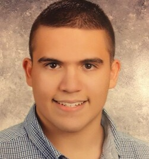

Matthew Torres
Looking for an opportunity to use my previous experience to grow and develop new skills.
My dream career is to be an expert digital multimedia graphic designer and animator.
I would love to work with Playground Productions and Nickelodeon.
Work Experience
Canteen Warehouse - Order Builder (Part-Time)
June 2019 - February 2020 in Altamonte Springs, FL.
Organized shipping orders; sorting and stocking vending machine orders into bins for delivery.
Trash what’s damaged – If it’s popped, beaten, or uneatable, I’ll be the one to toss it.
Worked well with all 10+ warehouse associates, providing exibility to ensure warehouse efficiency and
timeliness.
YMCA - Volunteer Laundry Washer (Volunteer/School Internship)
2018 - 2019 in Winter Park, FL.
Washing and drying towels along with folding them to be placeed in clean racks.
Put away towels and other cleaning supplies.
Orange County Public Library - Librarian Assistant (Volunteer/School Internship)
2017 - 2019 in Orlando, FL.
Assist Librarian with the job of book and DVD shelving, and preparing books and DVDs for home delivery.
Education
The Lyman School - High School Diploma
2020-2022 in Winter Park, FL.
The Paragon School - 5th to 11th Grade Studies
2013-2020 in Winter Park, FL.
Developed Skills
Quality Assurance
Good Work Etiquette
Dependable
Beginner Computer Programmer: JavaScript, Unity, and HTML
Amateur Adobe Digital Artist: Photoshop, Animate, Illustrator, and Premiere Pro